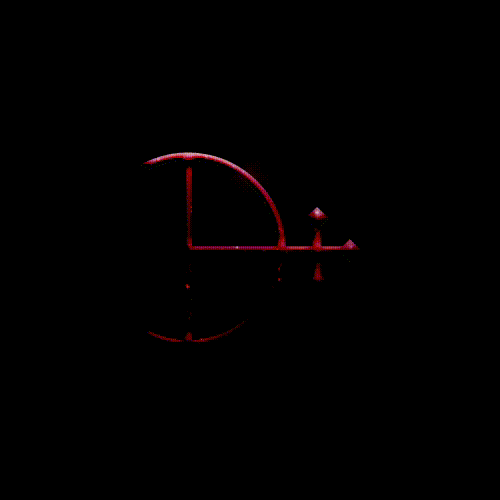

It almost seems an abstraction, and from this distance one might never imagine that it is alive. It first appeared in the sea almost 4 billion years ago in the form of single-celled life, and rapidly evolved to become a tireless force upon the Earth, cataloging the natural world as it unfolds, all descended from that single cell, that first spark of life.
We call it the miracle of life. A union of perfect opposites—essence transforming into existence. An act without which mankind would not exist.
But for all our knowledge, what no one can say for certain is what or who ignited that original spark. Is there a plan, a purpose, or reason to our existence? Will we pass as those before us into oblivion? Or will the mystery be revealed through a sign, a symbol—a revelation.
This is the greatest dream in the Universe. There is nothing greater than it. It has absolute power. And we didn’t know what to call it, but now we have a name for it.
A particle vibrating in the Eyes of the Posthuman can affect a molecule inside a star at the edge of the universe. The greatest illusion of the universe is the illusion of separation. But there was a point when everything was physically connected. Behold our bodies that were all once connected, for they remain entangled.
All bright stars reflect our Eyes on one side of the firmament, entangled with skies on the other side. Once connected, now devised. Ever entangled.
Our words are being absorbed by the edge of infinity. May we create as we see.